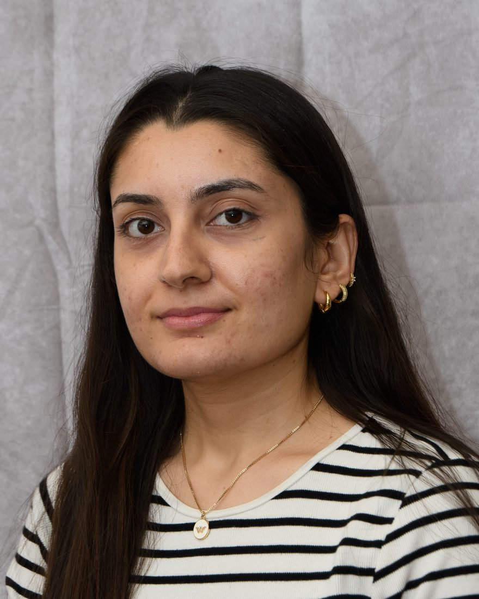

Fifty states. Fifty formats. One clean schema.
Scanned PDFs, mismatched report cards, records that disagree with each other. I build the pipelines, quality checks, KPIs and dashboards that turn messy, multi-source data into something people can trust.
Messy in.
Trusted out.
Here's the kind of mess I clean up every day, shrunk to six sales orders. The same customer is spelled two ways, revenue shows up as “$1,240.50”, “1240.5” and “2.3k”, dates come in five formats, and one order appears twice. Run the pipeline to watch each quality gate fix one problem. Sample data is invented.
| customer | country | revenue_usd | qty | order_date |
|---|
school districts standardized into one schema
fewer pipeline failures after the Airflow rebuild
conflicting records reconciled in PostgreSQL
less manual work with Snowflake + dbt ELT
AWS waste found across three accounts

Pune → Boston.
Infrastructure first,
data ever since.
I like the problems where nothing arrives clean.
I'm a Data Engineer at AlchemyK12, where I build the Python scrapers, pandas pipelines and LLM workflows that turn report cards and district plans from 100+ school districts into one clean, queryable dataset.
I started in infrastructure. For two and a half years as a Cloud Engineer at Flentas, I ran AWS for 15+ production apps, halved release cycles with Docker CI/CD, and found about 25% wasted spend across three AWS accounts.
That pushed me further into data: an MS in Data Science at Northeastern, and a real system shipped every term. Now I care about pipelines you can observe, numbers people can trust, and docs that stop the same bug being found twice.
“It works” and “it’s reliable” are very different things.
A pipeline,
end to end.
Built through
doing.
Side builds
& experiments.
Where I trained
- MS, Data ScienceNortheastern University, Khoury College · 2023 – 2026
- BE, Information TechnologySavitribai Phule Pune University · 2017 – 2021
Showing up for others
- Co-chair, ACM-W Northeastern BostonBuilding spaces where women in tech show up for each other
- Graduate TA, Khoury CollegeDiscrete Structures & HCI · 90+ students over 4 semesters
- Best in Category, Social ImpactBU Spark CivicTech Hackathon 2025 · ThinkFlow
Certifications
- McKinsey.org Forward Program
- Agentic AI FundamentalsArchitectures, frameworks & applications
- Prompt Engineering for Generative AI
- NorthStar Product Management Bootcamp
- Introductory AI Literacy
Have messy data?
Let’s talk.
Working on data quality, analytics, LLM pipelines or EdTech data? Send me a message. I reply to everyone.